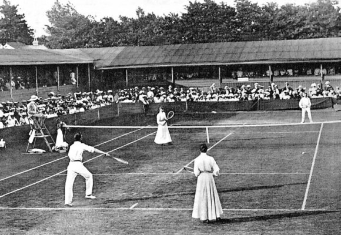

The History of Tennis
Modern tennis originated in the nineteenth century in Great Britain, but its roots go deep into history, tracking back to medieval France.

Key Development Stages:
- The French game "Jeu de paume"
- Played with the palms of the hands without rackets.
- Highly popular among royal nobility.
- The Birth of Lawn Tennis
- Patented by Major Walter Wingfield in 1874.
- Moved the sport outdoors onto grass courts.